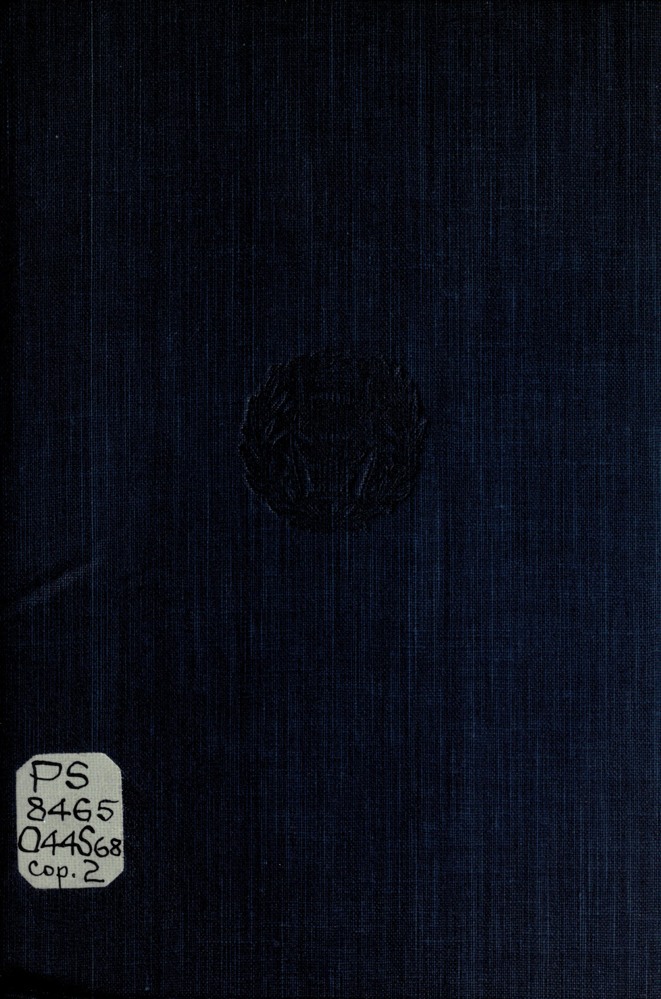

1:46 · 1 OPERA
In loving memory, Molly (2010 - May 9, 2025).
Il filo del discorso
Il ricordo di Molly introduce una poesia in inglese su un cane immaginato alle porte del paradiso, in attesa della persona a cui è legato. Mentre l’amico umano continua a sentirne l’assenza sulla terra, il cane interpreta ogni richiamo come la sua voce. La conclusione immagina che il legame torni a offrire conforto nel momento della morte. Il testo è riconducibile a The Little Dog-Angel di Norah M. Holland, qui letto con adattamenti di genere e lessico; non è identificata un’edizione specifica.
I libri nel discorso

The Little Dog-Angel
Identificazione probabile
Note sul riferimento
Copertina: Spun-Yarn and Spindrift, J. M. Dent & Sons / E. P. Dutton, 1918; esemplare Robarts
Copertina della raccolta Spun-Yarn and Spindrift (1918), contenente The Little Dog-Angel a p. 7; scansione del piatto originale in tela blu dell’esemplare Robarts, University of Toronto. Il piatto non riporta il titolo: l’identità è controllata sul frontespizio dello stesso esemplare e sui cataloghi bibliotecari. Edizione scelta come riferimento iconografico; nessuna edizione è confermata nel video. L’identificazione della poesia nel video resta probabile.
Dopo la dedica a Molly, il testo descrive il cane alle porte del paradiso, l’attesa dell’amico umano, il richiamo ricordato sulla terra e il conforto del ricongiungimento.